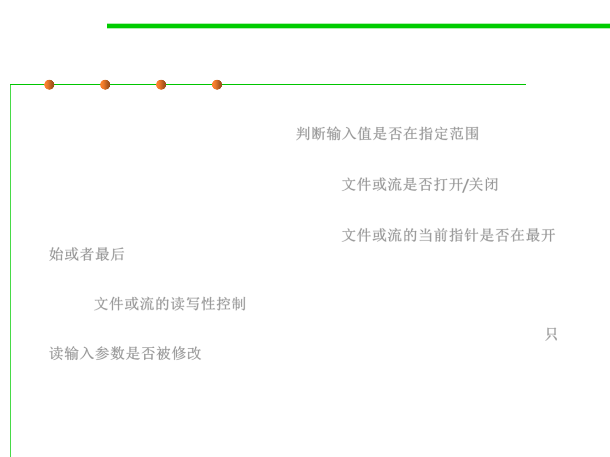

7.3 Assertions and Defensive Programming
What to Assert: more scenarios
▪ An input parameter’s value falls within its expected range (or an
output parameter’s value does) 判断输入值是否在指定范围
▪ A file or stream is open (or closed) when a method begins
executing (or when it ends executing) 文件或流是否打开/关闭
▪ A file or stream is at the beginning (or end) when a method begins
executing (or when it ends executing) 文件或流的当前指针是否在最开
始或者最后
▪ A file or stream is open for read-only, write-only, or both read and
write 文件或流的读写性控制
▪ The value of an input-only variable is not changed by a method 只
读输入参数是否被修改